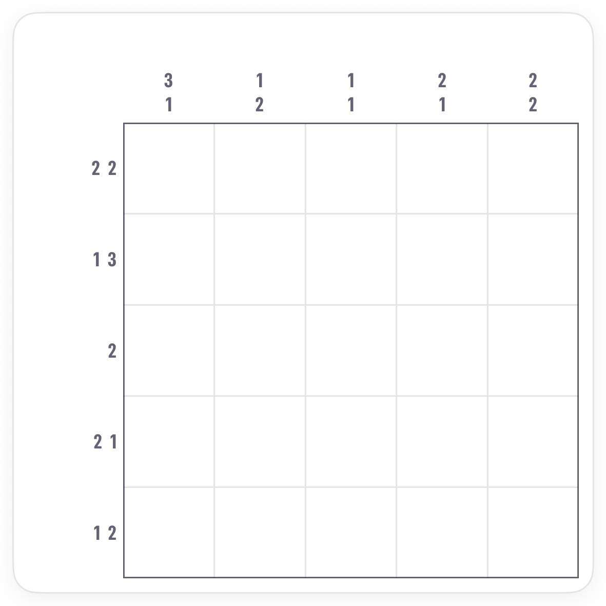
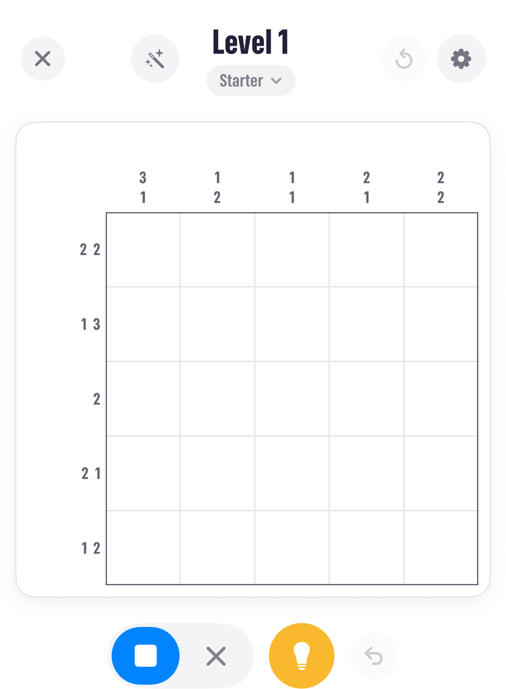
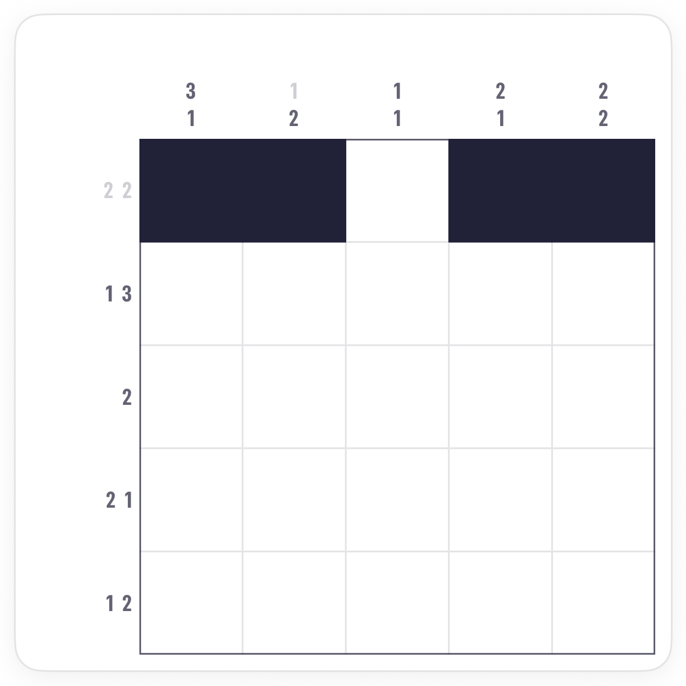
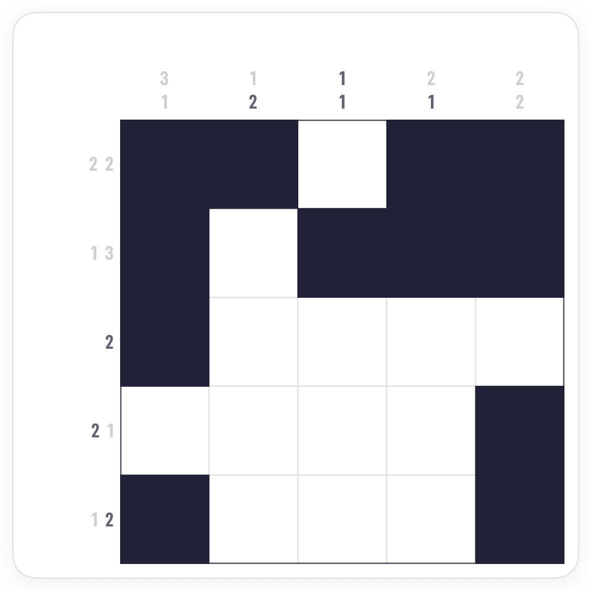
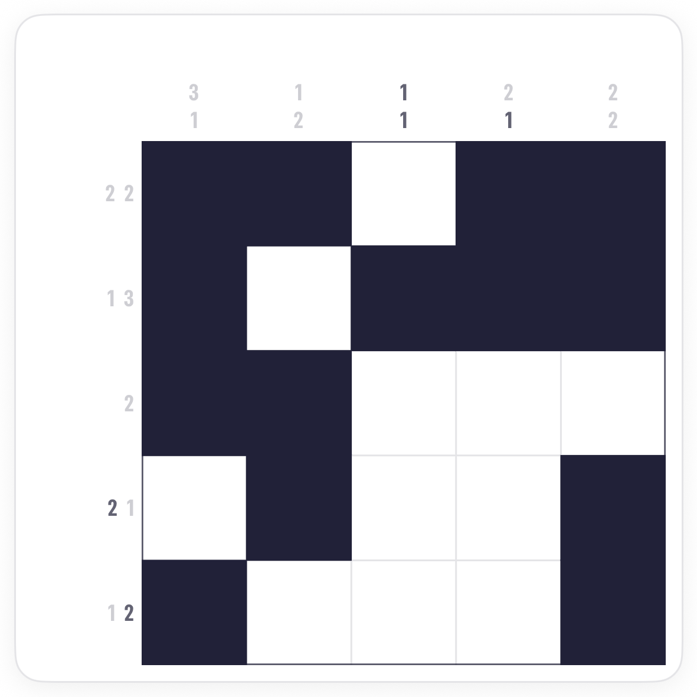
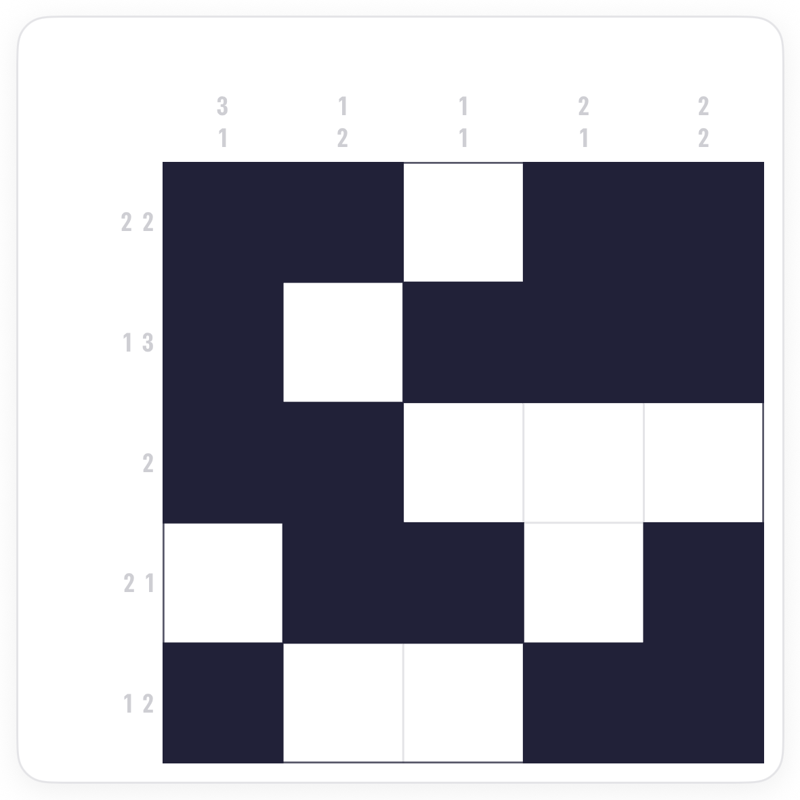

How to play Nonograms.
Nonograms, also called Picross or Griddlers, are grids you fill in from number clues along the edges. Here is the first board in Pocketful, and the three ideas that solve it.
The board.
A Nonogram is a grid of squares, here 5 by 5. Every square ends up either filled or empty, and the numbers along the top and left tell you which. Nothing on the board is given; the clues are everything.

Reading a clue.
A clue lists the runs of filled squares in that line, in order, with at least one empty square between runs. So a row clue of 2 2 means two filled squares, a gap of one or more, then two more filled squares. A clue of 2 on its own means one run of two, somewhere in the line.
The screen.
Two tools sit under the board. The square fills, the X marks a square you know stays empty. Tap a square, or drag along a line to do several at once. Marking the empties is not required, but it is how you keep track.

Idea one: a clue that fills the line exactly.
Add up a clue's numbers plus the gaps between them. If the total equals the length of the line, the whole line is decided: the runs have nowhere else to go.


Idea two: the overlap.
When a run is longer than half its line, every possible placement shares some squares in the middle. Those squares are filled whichever way it goes. Slide the run to its leftmost and rightmost positions in your head; where they overlap is certain.

Idea three: cross the lines.
Every square belongs to a row and a column, and each new fill changes what the other clue allows. When a run is complete, X the squares around it. When a line's clues are all placed, X everything else. Then read the clues that cross it. Beginner boards fall to this back and forth alone.

Common questions.
Do I have to mark the X's?
No, but it helps. An X is a note to yourself that a square is settled. The app can also X the rest of a line for you once its clues are done; that is on by default under Options.
What if a clue is a single 0?
The whole line is empty. X it and move on.
Is guessing ever needed?
Not on a well-made board, and every Pocketful board has one solution. If you are stuck, look for a clue that fills its line exactly, then for an overlap. One of them is usually waiting.